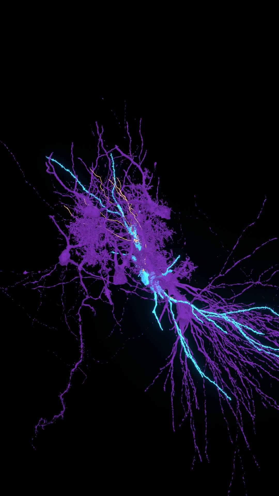
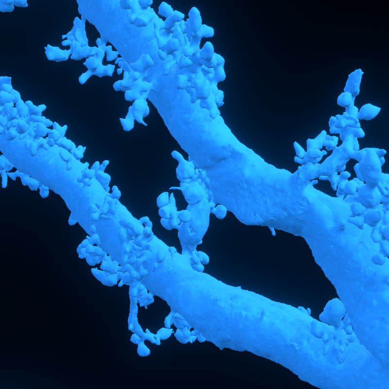
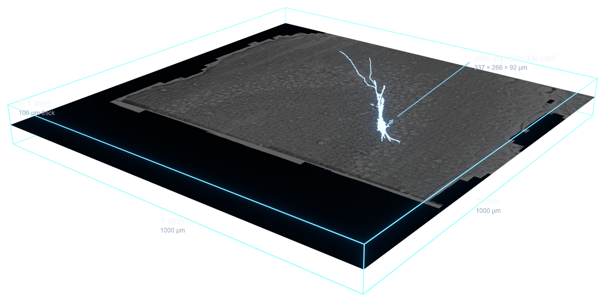

A library of hologram and HUD parts for a dark page. Step
rails, panels that boot up, a loading state that draws a cell, a modal
surface, and a particle trace for media. Two files, no build step, nothing
to install.
Particle trace, on an image
A short arc of light runs the boundary once, starting from wherever your
pointer crossed it, then breaks into particles that decay along a branching
tree. Corner brackets push outward and the readouts fade in. Every value shown
is real, read off the media element at runtime.
Enter from different edges. The light is struck where you cross.
One thorny pyramidal cell, 4.5 million triangles in the original.
Step rail
A counter in tabular caps, a hairline rail, the run so far filled and
glowing, a brighter dot where you are, dimmer ticks after it. Drag the rail and
the step follows the pointer. Click a tick to jump. Focus one and use the arrow
keys, or Home and End. It takes any number
of steps and reports the current one back on a holobar:change
event, on a data-step attribute, and on el.holobar.
The fill stops at the dot you are on rather than one step past it, so it
still reads correctly at three steps as well as at thirty. The rail takes the
pointer capture on pointerdown, so a drag keeps working after the cursor
leaves the 2px line, and the 700ms ease on the fill is dropped for the
duration of the drag so the light tracks your hand instead of chasing it.
Readout panel
One label, one number, one line of context. This is the whole idea of the
repo in one component: say something true, and the ornament stops being
ornament.
this one cell receives
165
mossy fiber synapses, from only 6 fibers. A single terminal
makes dozens of contacts on one thorn.
Underline that draws itself
A hairline runs out from under a heading the first time that heading comes
into view. One pass, left to right, then it stays. Cheap, and it does more for
a page of flat sections than any amount of glow.
Reconstruction, stage two
Panel that boots up
Two bright heads run the border in opposite directions and meet, an inner
backlight swells and tapers, and the panel resolves out of a blur. It runs once when the
panel first comes on screen, and again every time you point at it.

partner cells56 reconstructed
The two decorative spans are added at runtime and sit behind the panel
content, so the panel keeps its own border, its own shadow and both of its
pseudo elements. The masthead at the top of this page is the same component.
Scan sweep
A thin line passes across a panel once when you point at it or tab into it.
The band is a background on a full size overlay, so a single pass covers the
panel whatever its height.

One bouton, one thorn.

The imaged block, 1 by 1 by 0.1 mm.
Image card
Near black ink instead of the white tinted glass a panel usually gets, so
the render inside it pops rather than being washed out. Faint scanlines every
3px. A rim and a backlight that live entirely in the box shadow, so they never
lighten the card body. Point at it and a bright head runs the perimeter.
partner cells56 reconstructed
one bouton1 thorn, dozens of contacts
The hover state is shadow only. Nothing moves, nothing scales, the image is
never repainted, and that is why it stays calm at any size. The middle shadow
layer is 0 0 24px -6px: the negative spread pulls the glow back so
it hugs the card instead of bleeding off it, and that one number is the
difference between a lit card and a smudge. The accent is its own token,
--holo-cyan, a teal leaning cyan rather than the blue white the
rest of the library uses.
Dialog
The EyeWire II sign in modal, reproduced. A drifting particle field built
from six radial gradient dots at six tile sizes, a gradient border that cycles
blue, violet and teal on a six second loop, an ambient wash from the top edge,
two counter rotating rings, and a materialise that arrives blurred and
overbright and settles through a soft overshoot. It is a real
<dialog> opened with showModal, so focus is
trapped and Escape closes it without a line of script.
This is a visual component only. There is no
authentication in it, no form element, and nothing to sign into. The field is
an ordinary text input, the button does nothing when you press it, and no
request goes anywhere.
Two things loop, because both are ambient rather than event driven: the
particle drift and the border cycle. Everything else runs exactly once per
open, which is free, because a closed <dialog> is
display: none and opening it starts every animation over.
Loading state
A cell draws itself in while you wait. The basal arbor is half a cycle
behind the apical one so the two trees do not pulse in lockstep, which is what
makes it read as alive rather than as a spinner. The bar underneath reports a
real count when you have one to report, and goes indeterminate when you do
not, rather than inventing a number.
loading meshes
no total yet
This is the only piece in the library that repeats, because a loading state
is the one place a loop is honest.
Particle trace, on a video
The same treatment over video, plus a play affordance, because the native
control is small and often lands on top of whatever is burned into the frame.
It hides on play and returns on pause, and the native controls stay for
scrubbing. Each frame owns its canvas and only the hovered one runs.
An action potential travelling real reconstructed cable. Hover the
frame, then press play.
Put the canvas.trace before the media. The HUD layer, the play
badge, the step rail parts, the section rail, the card edge trace and the two
boot spans are all created at runtime.
Colours come from nine tokens on :root in the stylesheet, and
every rule carries a concrete fallback, so any one component works pasted into
a page with no token system at all. Read
README.md for the reasoning, the tunables, and the
compositing traps that cost real time.